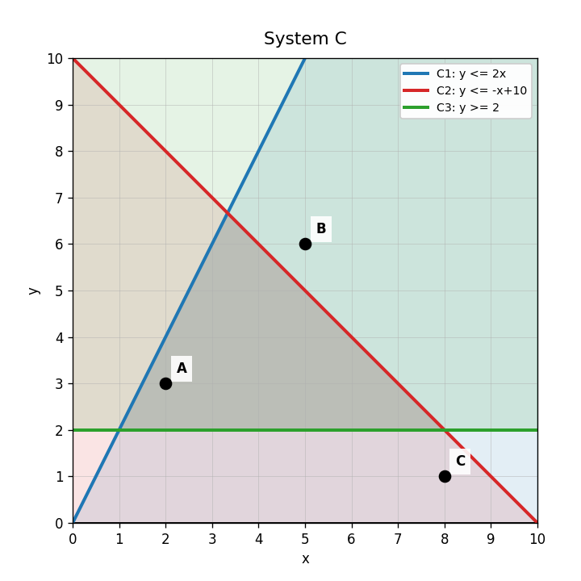
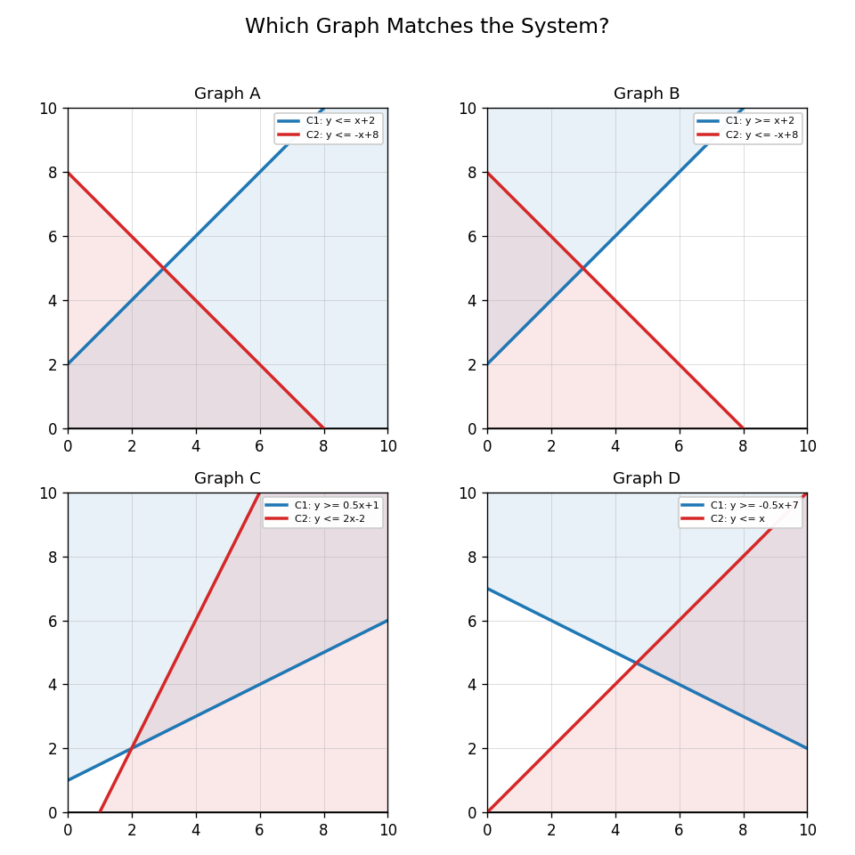
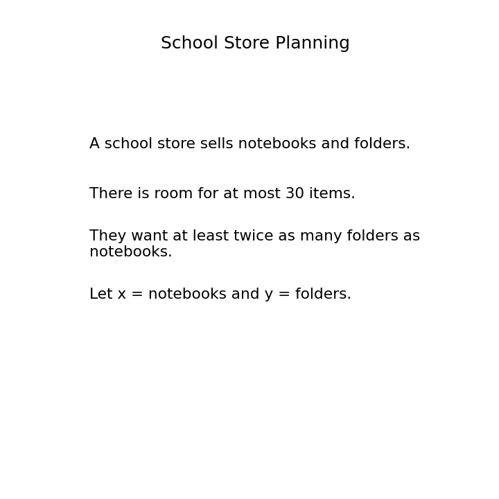

Practice Set 3.5.3
In System C, what is the role of the third constraint $y\ge 2$?

Determine whether $(5,6)$ satisfies all three constraints.
$$y\le 2x$$
$$y\le -x+10$$
$$y\ge 2$$
Use System C. Compare points $A$, $B$, and $C$. Describe what you would check to decide which are feasible.
Which graph best matches the system below? Justify using the inequality symbols and boundary lines.
$$y\le x+2$$
$$y\le -x+8$$

What is a boundary line?
Check whether $(1,1)$ satisfies $y\le 4x-2$.
What does a dashed boundary line tell you about points on the line?
Rewrite $2x+y\le 10$ by solving for $y$.
Graph $2x+y\le 10$.

A store can stock at most 30 items. Let $x$ be one item and $y$ be another. Write an inequality.
A student shades above the line for $y\le x+3$. Explain the mistake and how to correct it.
Change one symbol in $y\le x+3$ so that the boundary line stays the same but the solution region changes. Explain.
In $6x+4y\le 60$, what do the coefficients 6 and 4 represent in a cost context?
Use the school store card to write two inequalities.

Explain why $(5,12)$ might be a reasonable school store choice if $x$ is notebooks and $y$ is folders.
Create a context that needs two inequalities, not just one. Define the variables and write both constraints.